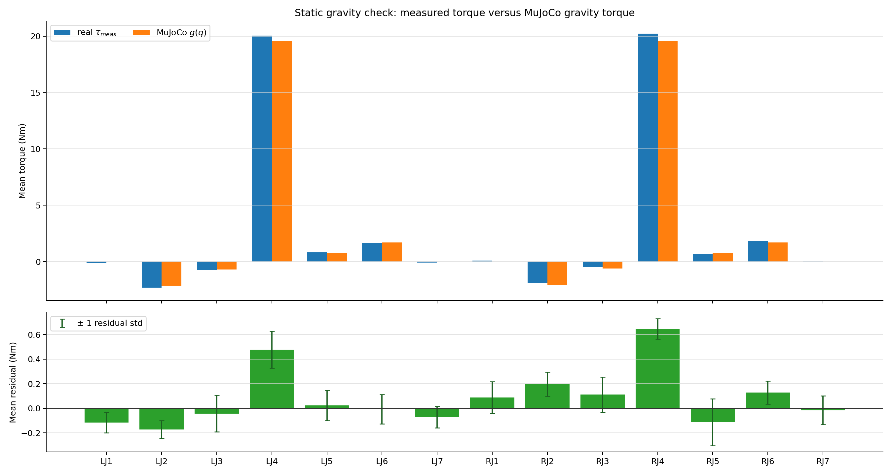
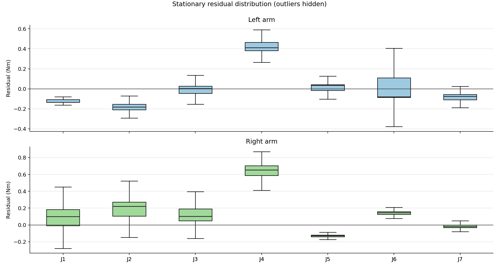
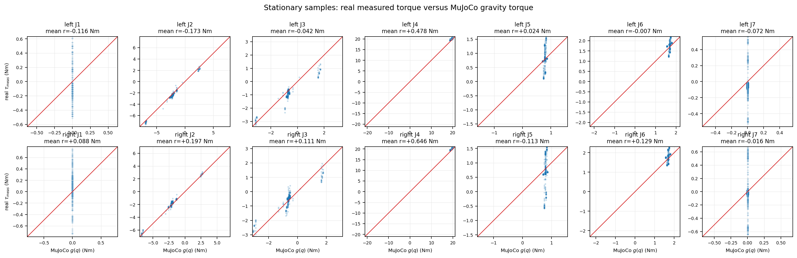

Dual-FR3 static gravity validation
Real SysID logs versus gravity-on MuJoCo inverse dynamics. Generated 2026-09-30 15:13 UTC.
Stationary samples215,901
Velocity threshold0.010 rad/s
Largest |mean residual|right_fr3_joint4: 0.646 Nm
Interpretation
For stationary samples, the test evaluates tau_meas ≈ g_MJ(q). MuJoCo contact is disabled and passive terms are zeroed. This checks payload, gravity direction, and joint mapping. It does not validate friction, damping, armature, delay, or contact dynamics.
Mean torque comparison

Residual distribution

Measured torque versus gravity torque

Joint summary
| Joint | Samples | Mean measured torque (Nm) | Mean MuJoCo gravity (Nm) | Mean residual (Nm) | Residual std (Nm) | 5–95% residual (Nm) |
|---|---|---|---|---|---|---|
| left_fr3_joint1 | 215,901 | -0.116 | 0.000 | -0.116 | 0.084 | [-0.162, -0.051] |
| left_fr3_joint2 | 215,901 | -2.318 | -2.145 | -0.173 | 0.072 | [-0.237, -0.065] |
| left_fr3_joint3 | 215,901 | -0.736 | -0.694 | -0.042 | 0.148 | [-0.301, 0.062] |
| left_fr3_joint4 | 215,901 | 20.063 | 19.585 | +0.478 | 0.151 | [0.354, 0.788] |
| left_fr3_joint5 | 215,901 | 0.813 | 0.790 | +0.024 | 0.123 | [-0.039, 0.055] |
| left_fr3_joint6 | 215,901 | 1.687 | 1.694 | -0.007 | 0.119 | [-0.097, 0.153] |
| left_fr3_joint7 | 215,901 | -0.072 | 0.000 | -0.072 | 0.086 | [-0.129, -0.017] |
| right_fr3_joint1 | 215,901 | 0.088 | 0.000 | +0.088 | 0.129 | [-0.060, 0.234] |
| right_fr3_joint2 | 215,901 | -1.909 | -2.105 | +0.197 | 0.099 | [0.048, 0.301] |
| right_fr3_joint3 | 215,901 | -0.497 | -0.608 | +0.111 | 0.144 | [-0.005, 0.265] |
| right_fr3_joint4 | 215,901 | 20.222 | 19.575 | +0.646 | 0.084 | [0.516, 0.761] |
| right_fr3_joint5 | 215,901 | 0.683 | 0.796 | -0.113 | 0.191 | [-0.183, 0.006] |
| right_fr3_joint6 | 215,901 | 1.826 | 1.697 | +0.129 | 0.095 | [-0.042, 0.174] |
| right_fr3_joint7 | 215,901 | -0.016 | 0.000 | -0.016 | 0.117 | [-0.058, 0.021] |
Reproduction inputs
MJCF: /tmp/dual_fr3_plate_260929.xml
CSV pattern: data/sysid_raw/real/*.csv
Download joint summary CSV · Open Markdown report · Open manifest